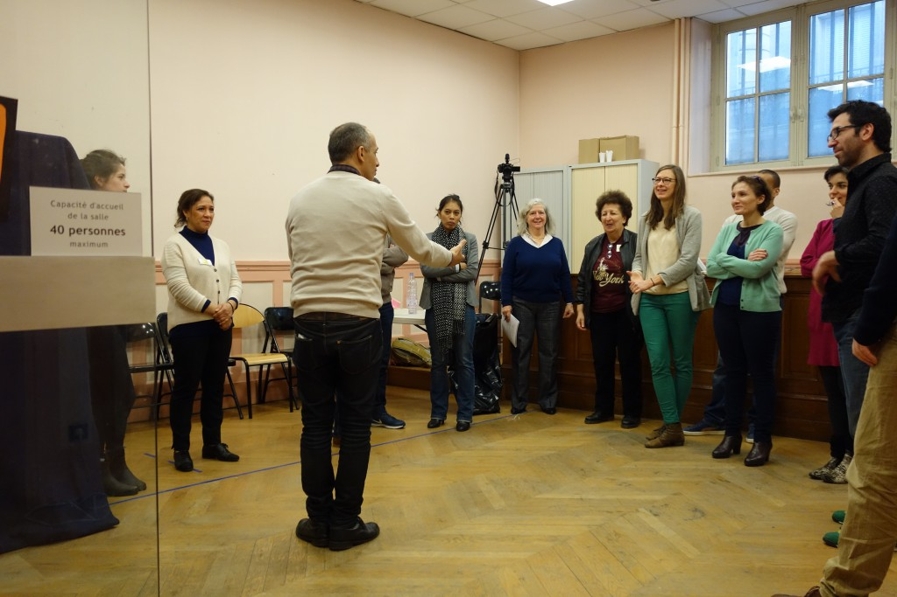
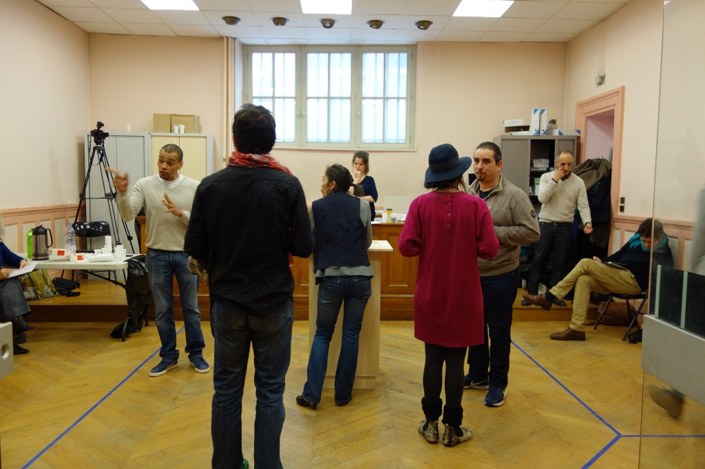
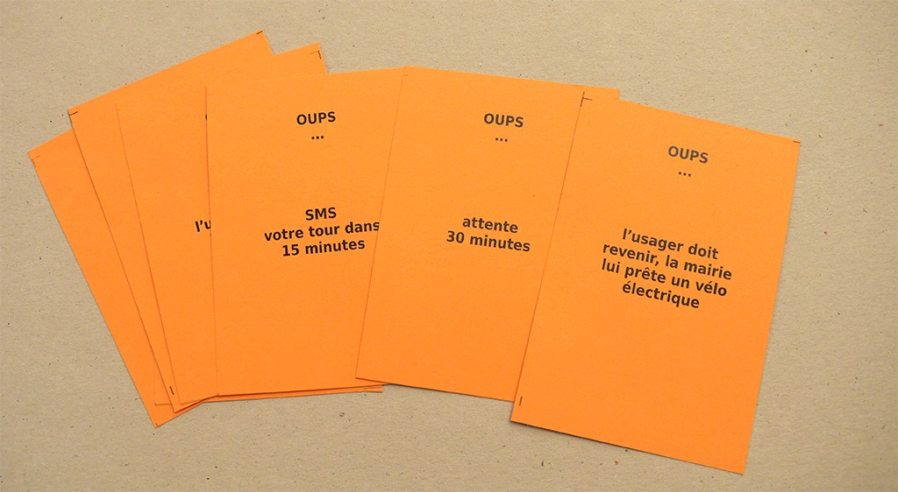
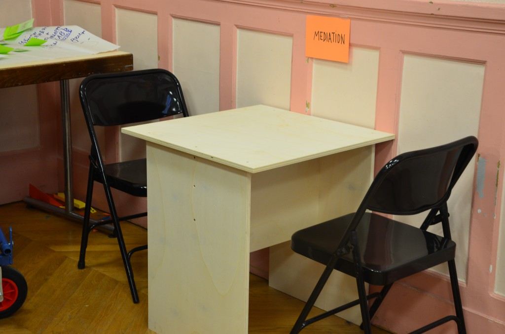
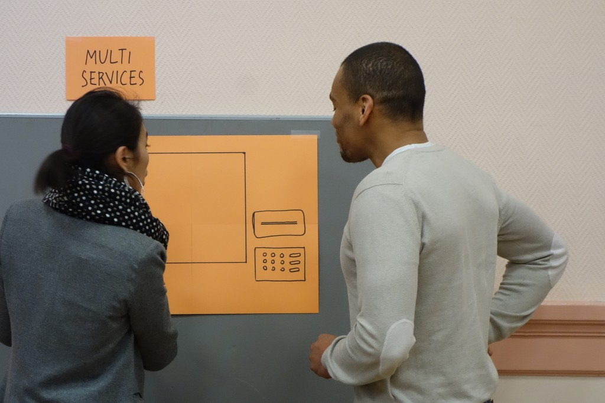
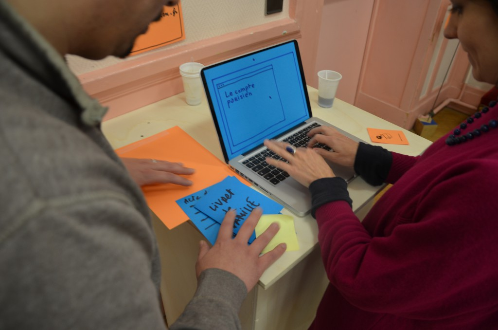
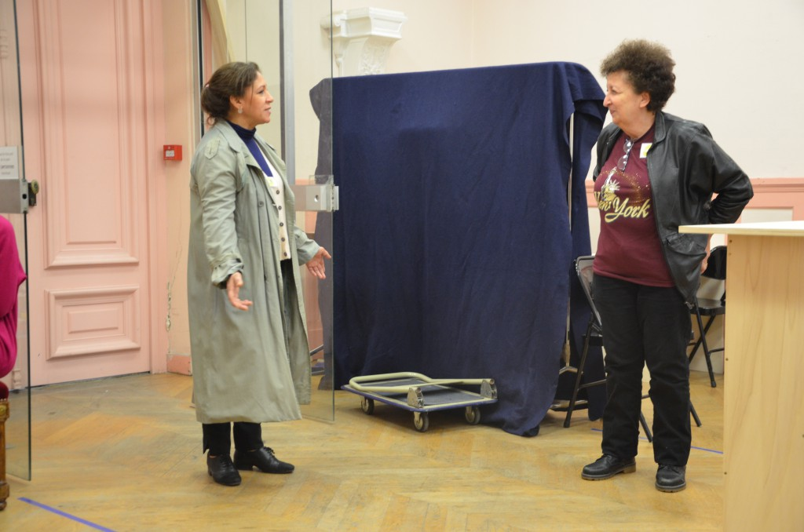
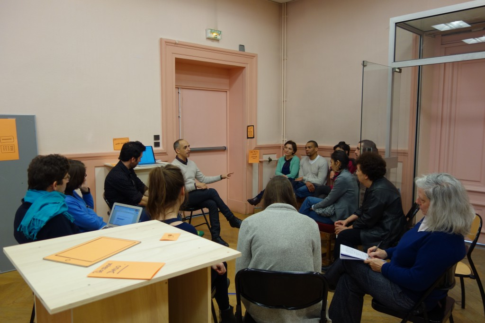

Mercredi matin, 6 agents ont participé, avec l’équipe des résidents, à une expérience théâtrale simulant des situations d’accueil, dans une configuration de l’espace nouvelle.
{kind=link}
Différentes situations avaient été préparées, sous forme de cartes, illustrant des interactions variées entre usagers et agents.
exemples :
– un homme, invalide de guerre, assez revendicatif, vient demander un certificat d’hébergement pour un ami venant du Cameroun
– un jeune homme de 16 ans , accompagné de toute sa famille, vient se faire recenser
{kind=link}
{kind=link}
Que testait-on ? Deux choses à la fois :
- la conception spatiale d’un accueil, organisé autour d’un agent “volant” de pré-accueil, avec différentes zones (zone “lounge” d’attente, zone de connexion informatique, zone de confidentialité…)
- la possibilité de concevoir et d’outiller de nouveaux services à l’usager
Quelques enseignements et réflexions à partir de cette expérience :
A- Gestion de l’espace
1- La possibilité du chaos
La mise en place d’un pré-accueil général, assumé par un agent “volant”, vers qui convergent tous les usagers, peut entrainer des attroupements sources de stress, d’agressivité et de chaos, à la fois pour les usagers et les agents. Peut-on éviter un espace d’attente classique, avec file d’attente physique, ou système de tickets ?
La configuration des lieux, avec une délimitation de zones spécifiques, une gestion fine des files d’attente et des groupes, est donc essentielle, pour préserver la fluidité de l’accueil, et aussi la fonction “cérémonielle” de la mairie (mariages…), à laquelle les élus sont très attachés.
{kind=link}
{kind=link}
Cette gestion doit permettre d’orienter certains usagers vers une zone isolée, où l’agent peut “calmer le jeu”, effectuer un travail de médiation.
Il faut aussi pouvoir traiter les demandes demandant du temps (parce que c’est trop complexe, trop spécifique) et/ou de la confidentialité ( parce que la personne dévoile son intimité ou partage des informations personnelles -revenues, situation de famille, etc)
{kind=link}
2- Des changements de postures
La mobilité des usagers est facilitée : plus on peut réaliser de procédures dans cet espace tiers-lieu, moins on est obligé de passer les couloirs et la cour (avec des poussettes, les fauteuils roulants, etc)… En revanche, la station debout a des limites pour les personnes âgées ou handicapées, il faut pouvoir passer rapidement à une configuration assise, avec du mobilier adapté.
B- Conception et outillage de services innovants
1- L’ouverture vers le multi-services
Les agents sont apparus ouverts à la présence dans la mairie de services extérieurs (Poste, billetterie spectacles…), par exemple sous forme d’un accès en ligne. Mais sur quels critères sélectionner ces services extérieurs ? Quelle intention doit présider à leur sélection (politique culturelle, promotion du commerce local etc.) ?
2 – Espace numérique & compte parisien
{kind=link}
La présence d’un espace numérique doit permettre à l’usager d’effectuer des démarches dématérialisées lui-même, sous réserve d’un monitoring assumé par un agent. Dans le cadre du test, les agents ont assuré spontanément cette fonction.
L’espace numérique présente en outre un avantage essentiel : la création la plus précoce possible du « compte parisien » de l’usager. Ce compte, une fois créé, peut alléger les demandes d’information adressées à l’usager, et permettre un suivi de l’itinéraire administratif de l’usager.
3- L’outillage de l’agent d’accueil et sa conception
{kind=link}
Le test suggérait aux agents d’inventer eux-mêmes les outils, même utopiques, qui leur étaient nécessaires.
En situation de jeu, un agent a inventé la « cartographie interactive» du quartier, pour orienter et renseigner un usager souhaitant un service de billetterie pour un spectacle au 104. D’autres fonctions ont alors été imaginées pour cette cartographie : vérification de l’adresse de l’usager par exemple, orientation vers une structure partenaire…
Mais qui conçoit ces nouveaux outils? L’expérience mettait en scène une sorte de “Mc Gyver”, joué par un designer, qui fournissait instantanément l’outil évoqué. Cela peut donner l’idée d’une espèce de « bureau d’étude-atelier » interne, avec des personnes capables d’inventer des outils, pour soutenir les agents qui font face à des situations imprévues.
{kind=link}
{kind=link}
C- Des conséquences internes de ces innovations
1- Quelles compétences pour les agents d’accueil ?
Dans l’expérience menée, les compétences techniques nécessaires aux agents sont passées au second plan par rapport à leurs compétences relationnelles. Cela est dû évidemment aux règles du jeu adoptées : “faux” usagers, caractérisés surtout pas des profils psychologiques et des situations sociales ; outils et procédures “magiques” instantanément disponibles pour chacun, et soutenant la prestation technique.
Mais l’implication visible des agents, dans les saynètes qu’ils jouaient, dans la gestion de la relation avec l’usager, souligne le caractère primordial des compétences relationnelles des agents d’accueil.
{kind=link}
L’agent a notamment une fonction de traduction de la demande souvent mal formulée de l’usager, il construit aussi une relation de confiance qui contribue à la pacification de la relation, et qui peut être perdue si le processus est trop morcelé entre plusieurs agents. En effet, l’usager risque aujourd’hui de répéter sa demande plusieurs fois de suite devant plusieurs agents différents.
Cette compétence doit pouvoir être décrite et valorisée, pour que le métier d’accueil apparaisse comme un “vrai” métier, à égalité avec les métiers techniques.
2– La construction d’une dynamique d’équipe du personnel de mairie
L’exercice collectif a permis, sous forme ludique, des prises de risques des agents, qui sont sortis de leur zone d’activité routinière, pour s’inventer, en situation, des rôles inédits.
Cela peut suggérer qu’il y aurait intérêt à faire assumer la fonction d’agent volant par tous les agents, issus des différents services, par roulement. L’expérience a en effet montré que des personnes peu en contact avec les usagers ont été à l’aise et ont semble-t-il apprécié …
{kind=link}
Un apprentissage collectif et une montée en compétence des agents pourraient en résulter, par échange de compétences techniques et relationnelles et d’astuces diverses. De plus, cela aiderait à la reconnaissance des compétences d’accueil, éviterait la constitution d’un “ghetto métier” autour de l’accueil.
Enfin, cette participation collective aux tâches d’accueil peut aider à la constitution symbolique du collectif “personnel de la mairie” autour de la figure de l’usager.